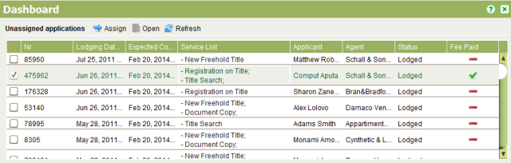
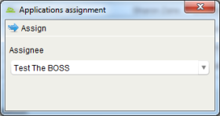

To assign an application, you must first ensure the Paid flag on the Fees tab is checked. If
you have permission to set the Paid flag, you can do this by editing the application and
checking the Paid checkbox on the Fees tab. Make sure to Save your changes. To assign the
application, check the checkbox beside the application you want to assign in the Unassigned
applications list and click the
Save your changes. To assign the
application, check the checkbox beside the application you want to assign in the Unassigned
applications list and click the Assign tool.
Assign tool.

Unassigned Applications List
This will open the Applications Assignment dialog.

Applications Assignment Dialog
In the Assignee to dropdown, select the appropriate user and click  Assign again. A confirmation
message will display stating the application has been assigned. Click OK the message to
return to the Dashboard screen.
Assign again. A confirmation
message will display stating the application has been assigned. Click OK the message to
return to the Dashboard screen.
Typically users will only be able to assign applications to themselves (i.e. they will be able to pull work), however team leaders will be able to manage the workload of their teams and will be able to assign and reassign applications to other users by selecting the appropriate user from the User drop down list.